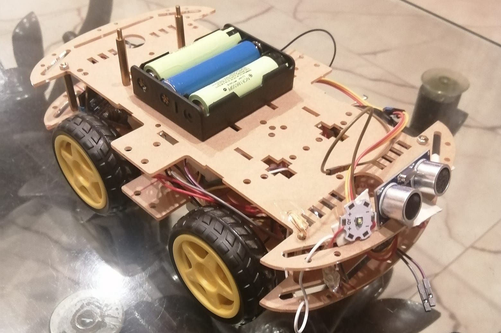

May 18, 2024
Finalization
With the installation of the top chassis, including the ultrasonic sound sensor, LDR with LED, and other essential components, the rover reaches completion. Equipped with autonomous movement, automatic lighting, and recording capabilities, this rover stands fully functional and ready for its intended tasks.

May 22, 2024
Max Distance Algorithm

I have connected the sensor to the servo, and wrote an algorithm which detects if the distance is below a certain limit. If it is, the servo rotates from 90 degree to 0, from 0 back to 90 , then to 180 and back to 90. While this happens the sensor finds the greatest distance and then stores it:
Phase 3: Final Preparation

For the final preparation, I employed a robust 4WD chassis which consists of 4 DC gearmotors, selected for their torque and efficiency, a battery holder capable of powering extended missions, sturdy tires to navigate various terrains, and the rover chassis itself, engineered for durability and stability.
May 8, 2024
Rover Assembly

After gathering all the materials, the next step was assembling everything. Initially, connecting the tires, motor, and body was crucial. Following this, the focus shifted to integrating the circuitry, which included the motor driver, Arduino, and batteries. Further steps involved testing and calibrating the components to ensure optimal functionality and performance.
May 16, 2024
Finalization
With the installation of the top chassis, including the ultrasonic sound sensor, LDR with LED, and other essential components, the rover reaches completion. Equipped with autonomous movement, automatic lighting, and recording capabilities, this rover stands fully functional and ready for its intended tasks.